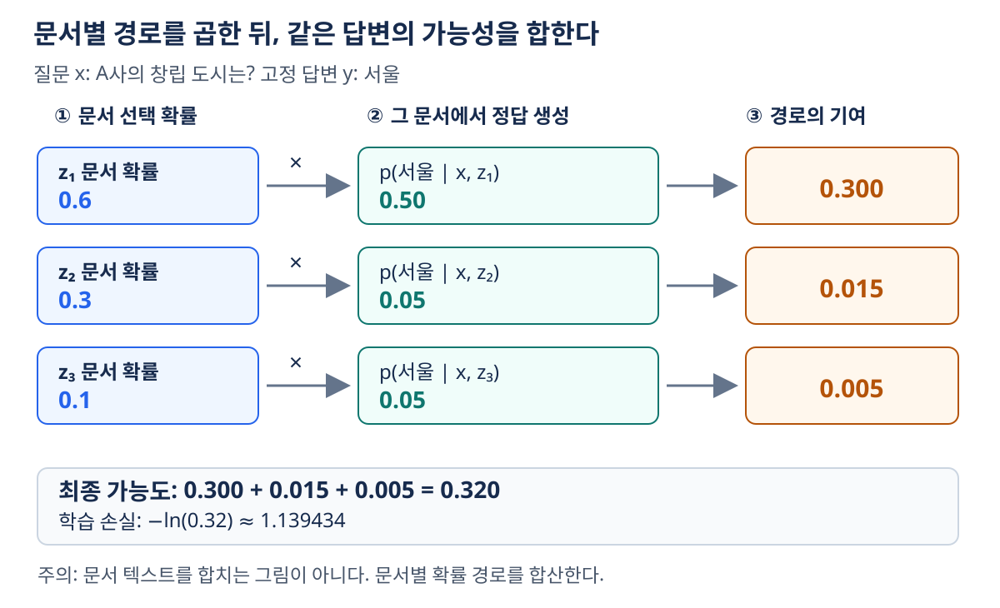
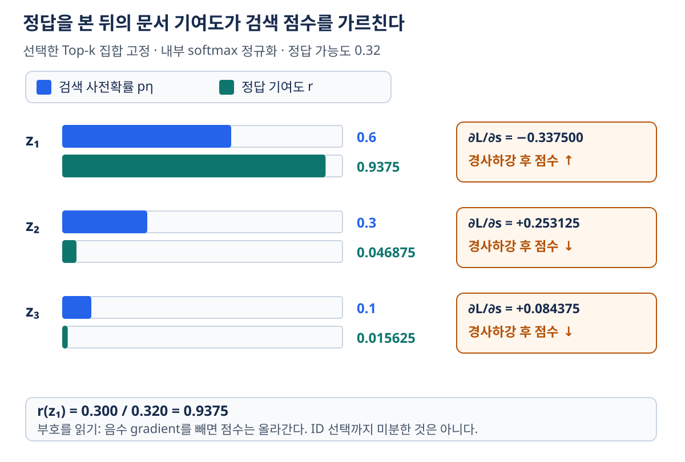
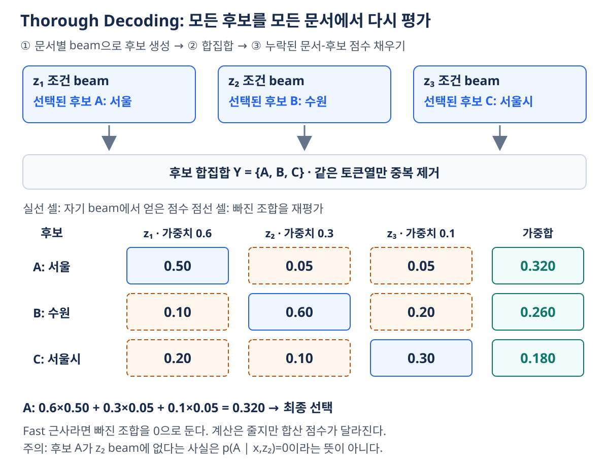

08. RAG-Sequence의 학습과 디코딩
이전: 청킹과 컨텍스트 구성 · 학습 안내 · 다음: 검색 고도화
이 장은 검색한 문서를 프롬프트에 붙이는 응용을 넘어, 정답을 잘 생성하도록 검색기와 생성기를 함께 학습하는 확률 모델을 다룬다. 읽고 나면 문서 선택 확률·문서별 정답 확률·최종 정답 확률을 구분하고, 학습과 추론에서 각각 무엇을 계산하는지 설명할 수 있어야 한다.
1. 한 문서를 고르는 것과 문서의 가능성을 합하는 것
질문 x에 관련된 문서가 세 개 있다고 하자. 가장 높은 검색 점수의 문서 하나가 항상 정답 생성에 가장 유용하지는 않다. RAG-Sequence는 문서 z를 관측되지 않은 잠재변수로 취급한다. 각 문서를 조건으로 정답 문자열 y가 나올 확률을 계산하고, 문서가 선택될 확률로 가중하여 더한다.
| 기호 | 의미 | 출력의 종류 |
|---|---|---|
x |
입력 질문 | 토큰열 |
y=(y₁,…,y_T) |
학습 때의 정답 또는 추론 때의 답변 후보 | 토큰열 |
z |
검색된 문서 또는 passage | 문서 ID와 내용 |
η |
검색기 파라미터 | 학습 대상 |
θ |
생성기 파라미터 | 학습 대상 |
pη(z|x) |
질문에 대한 문서 선택 확률 | 문서별 스칼라 |
pθ(y|x,z) |
질문·문서 조건에서 해당 답변 전체의 확률 | 문자열별 스칼라 |
문서 집합을 D라고 하면 기본 형태는 다음과 같다.
이 합을 **주변화(marginalization)**라고 한다. 어느 문서가 답을 낳았는지 하나로 확정하지 않고 그 가능성을 합산한다. 문서들을 문자열로 모두 이어 붙이는 연산도, 문서 임베딩을 평균하는 연산도 아니다.
한 문서에서의 답변 확률은 자기회귀 곱이다.
학습에서는 정답의 이전 토큰 y<t를 입력하는 teacher forcing으로 정답 문자열의 점수를 구할 수 있다. 추론에서 다음 토큰을 실제로 생성하는 작업과 구별한다. 긴 문자열은 확률 곱이 매우 작아지므로 계산은 보통 로그 공간에서 수행한다.
2. Top-k 근사와 정규화 범위를 먼저 고정하기
문서 수가 수백만이면 모든 문서를 생성기에 넣을 수 없다. 검색기가 고른 Z=TopK(x)만 사용하여 합을 근사한다.
여기에는 서로 다른 두 해석이 있으므로 예제의 가정을 밝혀야 한다.
- 전체 문서에 정규화된 확률을 그대로 유지: Top-k 밖의 항을 버린다. 남은 문서 확률 합은 1보다 작을 수 있고,
p̃는 생략한 확률 질량이 있는 근사다. - 검색된 Top-k 안에서 재정규화: 검색 점수
s_z를softmax(s_z, z∈Z)로 바꾼다. 선택된 문서들을 합계 1인 혼합 가중치로 사용한다. 이후 수치 예제는 이 방식이다.
둘을 계산 도중 섞으면 손실과 gradient가 달라진다. ‘Top-k를 쓰면 원래 주변확률과 정확히 같다’고 말할 수 없다. 관련 근거가 후보 밖에 있으면 이 단계에서 이미 정보를 잃는다.
정규화는 실제로 계산해 확인해야 한다. 점수 [14,10,9]를 온도 1의 softmax에 넣으면 약 [0.975559,0.017868,0.006573]이며, 임의의 [0.73,0.15,0.12]로 바꿀 수 없다. 확률을 설명용으로 지정했다면 점수에서 계산한 값과 구분한다.
3. 작은 예제로 주변확률과 손실 계산하기
질문은 ‘A사의 창립 도시는?’, 정답 문자열은 ‘서울’이라고 하자. 다음 값은 원리 설명을 위한 가상 확률이며, 실제 모델 측정값이 아니다.
| 문서 | 문서 확률 pη |
정답 ‘서울’의 생성 확률 pθ |
곱 |
|---|---|---|---|
| z₁ | 0.6 | 0.5 | 0.300 |
| z₂ | 0.3 | 0.05 | 0.015 |
| z₃ | 0.1 | 0.05 | 0.005 |
| 합 | 1.0 | — | 0.320 |

그림 읽기: 그림은 왼쪽에서 오른쪽으로 읽는다. 같은 답변 ‘서울’을 세 문서 조건에서 각각 평가한 뒤, 오른쪽의 세 경로를 더한다. 왼쪽 문서 확률은 합계 1이지만 가운데 생성 확률 세 개는 서로 다른 조건의 값이라 합계 1일 필요가 없다. 문서 텍스트를 한 덩어리로 합치는 그림과 구분한다.
문서 확률만 보면 z₂가 z₃보다 높다. 그러나 최종 목표는 검색 점수 자체가 아니라 정답 전체의 가능도다. 학습 손실은 자연로그를 사용하여
검색기의 0.6과 생성기의 0.5는 서로 다른 분포에서 나온다. 둘을 더하지 않고 곱하는 이유는 ‘z₁을 선택하고, 그 조건에서 서울을 생성한다’는 결합 가능성을 구하기 때문이다.
4. 정답이 검색기를 가르치는 방식
A_z=pη(z|x)pθ(y|x,z), S=Σ_z A_z라고 두자. 후보 집합 Z를 현재 계산 동안 고정하면
r_z는 정답까지 보았을 때 해당 문서가 기여했을 비중이다. 위 예제에서는 [0.9375,0.046875,0.015625]다. 문서 사전확률 [0.6,0.3,0.1]보다 z₁의 비중이 커졌다. 정답 생성에 유용한 문서에 학습 신호가 더 강하게 실리는 것이다.
검색 점수에 대한 Top-k 내부 softmax를 가정하고, 생성 확률이 검색 점수에 직접 의존하지 않으면
z₁의 gradient는 0.6−0.9375=−0.3375다. gradient descent는 이 점수를 올리는 방향으로 움직인다. z₂·z₃의 gradient는 각각 0.253125, 0.084375로 점수를 낮추는 방향이다. 부호를 외우기보다 현재 문서 확률과 정답 기여도의 차이로 읽자.

그림 읽기: 파란 막대는 정답을 보기 전 문서 가중치, 초록 막대는 정답 가능도에 대한 기여 비중이다. z₁은 정답 생성에 크게 기여하므로 초록 막대가 더 길고 점수를 높이는 학습 신호를 받는다. z₂·z₃은 반대다. 막대의 길이는 각 분포의 값이며 문서 길이나 사용 빈도가 아니다. 그림의 상승·하강은 점수를 독립 변수로 보았을 때의 경사하강 방향이다. 실제로는 공유하는 encoder 파라미터가 갱신되므로 모든 문서 점수가 표시된 방향으로 반드시 바뀐다는 보장은 아니다.
무엇까지 미분하는가? Top-k 문서 ID를 고르는 연산은 불연속이다. 위 유도는 현재 선택한 집합 안의 점수와 생성 확률을 미분한 것이며, 어떤 ID가 선택되었는지까지 일반적인 미분으로 역전파한 것은 아니다. 다음 forward에서 점수가 바뀌면 후보 집합도 달라질 수 있다.
또한 ‘검색기와 생성기를 함께 학습’이 문서 인덱스까지 매번 갱신한다는 뜻은 아니다. Lewis 등의 원래 RAG 실험은 문서 인코더·인덱스를 고정하고 질의 인코더와 생성기를 학습했다. 인덱스 갱신 비용과 학습 대상은 별도 설계 결정이다. 원논문 §2.4
5. RAG-Sequence와 RAG-Token 구분하기
RAG-Sequence는 한 가상의 생성 경로에서 출력 전체에 같은 문서를 조건으로 쓴 뒤 문서별 경로를 합한다. RAG-Token은 각 출력 위치에서 문서별 다음 토큰 확률을 먼저 합한다.
예를 들어 두 토큰의 조건부 확률이 문서 z₁에서 [0.9,0.1], z₂에서 [0.1,0.9]이고 문서 가중치가 각각 0.5라면, Sequence는 0.5×0.09+0.5×0.09=0.09, Token은 (0.5×0.9+0.5×0.1)²=0.25다. 합과 곱의 순서를 바꾸면 다른 모델이 된다.
RAG-Token이라는 이름만으로 매 토큰마다 문서 인덱스를 다시 검색한다고 해석하면 안 된다. 여기서 핵심은 문서별 확률을 토큰마다 혼합하는 방식이다. 토큰별 외부 검색은 11장의 kNN-LM과도 구분한다.
6. Thorough Decoding: 후보 생성과 재평가
학습 때는 정답 y가 알려져 있지만, 추론에서는 가장 가능성 높은 답을 찾아야 한다. 전체 문자열 공간을 열거할 수 없으므로 문서별 beam search로 답 후보를 만든다.
질문 x → Top-k 문서 Z와 문서 가중치
├─ z₁ 조건 beam search → Y₁
├─ z₂ 조건 beam search → Y₂
└─ z₃ 조건 beam search → Y₃
후보 합집합 Y=Y₁∪Y₂∪Y₃ (같은 토큰열은 한 후보)
각 후보 y를 모든 문서 조건에서 평가 → Σ_z pη(z|x)pθ(y|x,z)
가장 높은 후보 선택
beam에 나오지 않았다는 이유로 어떤 문서에서의 생성 확률이 0인 것은 아니다. Thorough Decoding은 빠진 문서-후보 조합도 teacher forcing으로 점수를 계산한다.
아래 문서 가중치는 [0.6,0.3,0.1]이다. 후보 A가 z₁의 beam에서만 발견되었어도 다른 두 열을 채운다.
| 후보 | z₁에서의 확률 | z₂에서의 확률 | z₃에서의 확률 | 전체 점수 |
|---|---|---|---|---|
| A: ‘서울’ | 0.50 | 0.05 | 0.05 | 0.320 |
| B: ‘수원’ | 0.10 | 0.60 | 0.20 | 0.260 |
| C: ‘서울시’ | 0.20 | 0.10 | 0.30 | 0.180 |
이 예제의 각 문서 열 합은 1 이하이며, 남은 확률은 표에 없는 문자열에 배정된다. 답은 A다. 출력 표현이 다른 ‘서울’과 ‘서울시’는 의미가 비슷해도 서로 다른 토큰열 후보다. 평가 때 의미를 묶는 일과 모델 확률을 합산하는 일을 섞지 않는다.
Fast Decoding은 후보가 그 문서의 beam에 없으면 그 항을 0으로 근사하여 추가 재평가를 생략한다. 계산은 줄지만 합산 점수와 최종 순위가 바뀔 수 있다. 원논문 §2.5
어떤 후보가 두 문서의 beam에서만 나왔다고 그 두 기여만 합하면 빠진 문서 항을 0으로 간주한 것이다. 이를 모든 문서 조건에서 재평가하는 Thorough Decoding과 구분한다.

그림 읽기: 위쪽 세 상자는 후보를 발견한 출처이고, 아래 행렬은 후보가 각 문서에서 얼마나 가능한지 평가한 결과다. 점선 셀도 실제 점수로 채우는 것이 핵심이다. A가 z₁에서 발견되었어도 z₂·z₃의 기여를 더해 0.320을 얻는다. 실선 셀만 남기면 Fast 근사이며 같은 점수 계산이 아니다.
7. 비용과 한계
문서 수를 k, 문서별 beam 크기를 B라 하면 후보는 중복 제거 전 최대 kB개다. 이를 k개 문서에서 재평가하므로 문서-후보 조합은 최대 k²B개다. 이는 조합 수의 대략적 크기이며 wall-clock 시간이나 GPU 호출 수와 같지 않다. 기존 beam 점수 재사용, 중복 후보, 길이 T, batching이 실제 비용을 바꾼다.
| 실패 조건 | 발생하는 문제 | 확인할 것 |
|---|---|---|
| 정답 근거가 Top-k 밖 | 올바른 문서 경로가 합에서 빠짐 | 검색 Recall과 후보 수 |
| 정답 문자열이 모든 beam 밖 | 재평가할 후보 자체가 없음 | beam 탐색과 후보 다양성 |
| 큰 k·긴 출력 | 생성·재평가 비용 증가 | 후보 중복 제거, batching, Fast 근사 |
| 긴 문자열 확률 곱 | underflow 또는 짧은 답 선호 | logsumexp, 길이 처리 규칙 |
| 검색기만 바꾸고 인덱스 표현을 방치 | 학습·검색 표현 불일치 가능 | 고정·갱신 대상 명시 |
beam 길이 보정 점수를 원래의 생성 확률처럼 주변화 식에 대입하면 다른 목적함수가 된다. 무엇을 정규화·보정했는지 기록해야 한다.
8. 확인 질문과 해설
- 문서 확률이 0.8이면 최종 답변의 정답 확률도 0.8인가?
- 후보가 z₂의 beam에 없으면 Thorough Decoding에서 z₂의 기여는 0인가?
- Top-k 내부 softmax의 미분이 가능하면 문서 ID 선택도 미분 가능한가?
- 예제의 z₁은 문서 확률 0.6인데 정답 기여도는 왜 0.9375인가?
- RAG-Sequence를 구현하려면 검색 문서들을 한 프롬프트에 모두 붙이면 되는가?
해설
- 아니다. 문서별 생성 확률과 곱해 모든 문서 경로를 합해야 한다.
- 아니다. 그 문서 조건의 후보 확률을 추가 계산한다. 0 근사는 Fast Decoding의 선택이다.
- 아니다. 선택된 집합 안에서의 연속 점수 미분과 불연속 ID 선택은 다르다.
- 정답을 보았을 때 z₁이 낳은 기여
0.3이 전체 정답 가능도0.32의 대부분이기 때문이다. - 아니다. 이 장의 모델은 문서별 생성 확률을 계산하고 확률 수준에서 혼합한다.
9. 더 읽기 — 선택 사항
Lewis 등의 RAG 논문은 문서별 확률 혼합, 학습 대상, 두 디코딩 정의의 연구 배경이다. 이 장의 식·표·그림·해설만으로 계산 과정을 학습할 수 있으며 외부 자료 열람은 필수가 아니다.